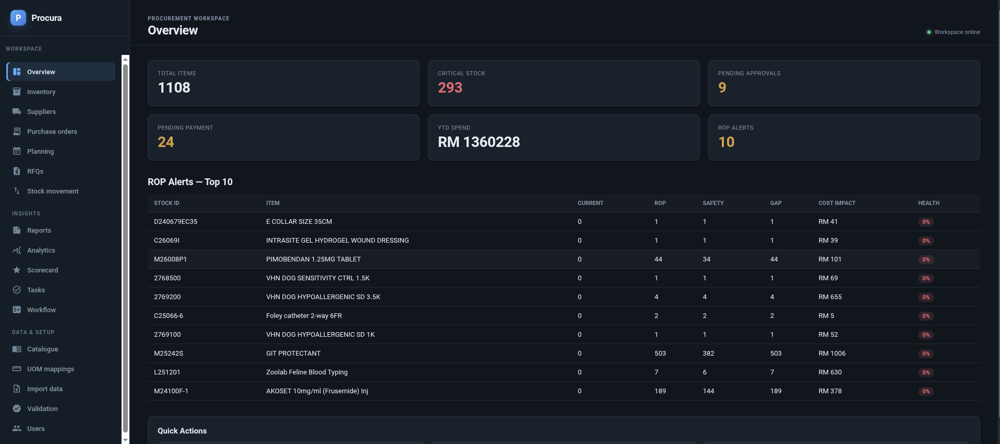

SYS-00Theoses● in production

Theoses
A self-hosted AI agent I use for research, planning, content drafts, repeatable workflows, documentation, and daily digital operations. It is the system behind the work on this page.
ai-agentsautomationcontent-systemsvps
See Theoses in a marketing workflow →